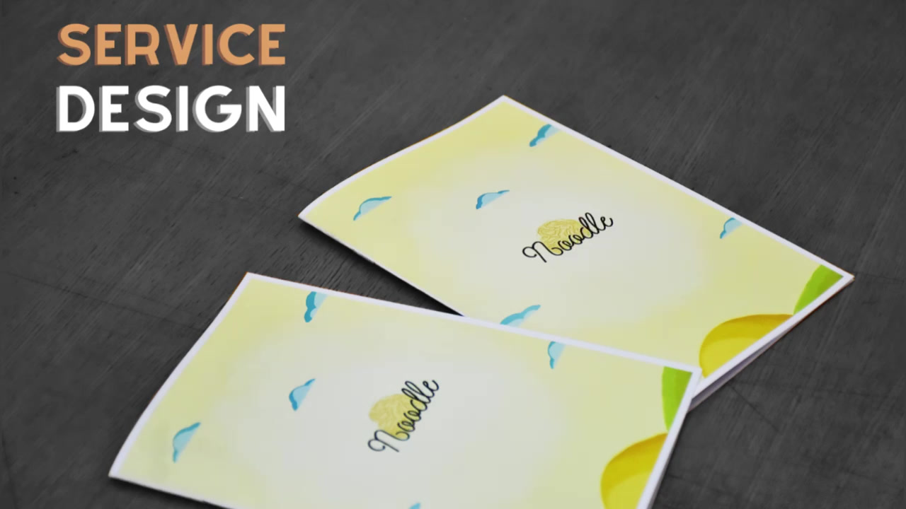
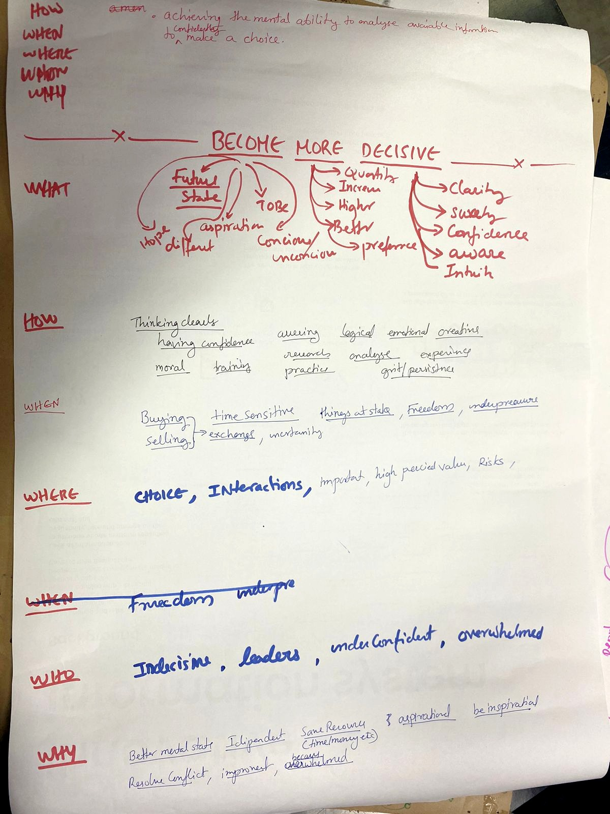

The Search for an Unsaid Need
We began with a simple but powerful question:
What is an unsaid need among people — one that, when addressed, can create a large and meaningful impact?
Instead of assuming answers, we decided to listen.
We placed a Wish Box in public spaces and invited people to anonymously write down what they truly wished for. We created an interactive wall where passersby could respond to a thought-provoking question. We conducted informal interviews. We held brainstorming sessions. We observed patterns.
Slowly, six strong needs emerged.
To move from insight to action, we applied the 5W Method (Who, What, Why, When, Where) to evaluate each need critically. One need stood out — urgent, universal, and deeply human:
The Need to Become Decisive

Why Decisiveness?
Human beings have evolved across centuries — technologically, socially, intellectually. Yet one struggle continues to persist within us: ambiguity in decision-making.
We hesitate. We overthink. We get stuck between emotion and logic.
Especially when decisions involve:
- Morality vs practicality
- Career vs passion
- Stability vs risk
- Relationships, education, finances
The inability to decide doesn't just delay outcomes — it creates anxiety, self-doubt, and emotional exhaustion.
But here was our real challenge: Decision-making is a vast umbrella. How do you design a solution that works across all kinds of decisions?
Finding the Pattern Beneath Decisions
To understand decisiveness, we analysed both successful and failed decisions. We asked:
- What made some decisions empowering?
- What caused others to collapse?
Across contexts and personalities, we noticed a common thread: every decision silently interacts with Past, Present, and Future.
- What do I already have?
- What should I build or acquire?
- What is driving me toward this choice?
- What could go right?
- What could go wrong?
From this insight emerged a structure we called:
The Triangle of Clarity
Every strong decision seemed to rest on three anchors:
- Drivers – What is pushing or pulling me toward this choice?
- Information – What do I know? What am I assuming?
- Consequences – What are the best and worst outcomes?
This triangle became the foundation of our framework. We converted it into a digestible, conversational format — a guided Q&A tool that gently walks a person through clarity.

The First Failure
When we tested the framework, we faced another reality. It worked, but it was too open-ended. Participants felt it was insightful yet broad. It lacked situational depth.
That failure taught us something important: If confusion is contextual, clarity must be contextual too. A universal framework needs situational tailoring.
Narrowing the Chaos
We asked ourselves: Where does uncertainty peak? Where does confusion feel overwhelming yet consequential?
One space stood out immediately: Final-year college students.
Students brimming with ideas. Dreaming of startups. Yet afraid to take the leap. Torn between:
- Entrepreneurship vs Employment
- Risk vs Security
- Passion vs Predictability
This was not just a career decision. It was an identity decision.
Introducing: Noodle
We redesigned our framework specifically for this scenario. We made it sharper. More relatable. Guided.
We called it Noodle — because a confused mind feels like tangled noodles: twisted, overlapping, hard to separate. Noodle untangles that chaos.
Instead of telling them what to choose, Noodle helps them see clearly enough to choose for themselves.
The Impact We Aim For
Decisiveness is not about making fast decisions. It is about making conscious ones.
By moving from a broad human need → to a structured clarity framework → to a contextual, tailored solution, we transformed confusion into a navigable process.
Because sometimes, the biggest impact does not come from giving answers. It comes from helping people ask the right questions.